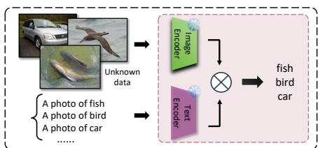

arXiv 新增 + CLIP test-time adaptation · P2 · 2026-06-17
Label Shift Aware Adaptation for：CLIP 仍是通用视觉-语言表征底座，理解它在在线无标签场景中的适应机制对评估 SSL/VLM 表征有帮助
指出很多 CLIP test-time/online zero-shot 方法只适配 incoming samples，却忽略 CLIP 训练源分布与测试目标分布的差异。
编号2606.15169
优先级P2
类别arXiv 新增 + CLIP test-time adaptation
会议arXiv 新增 + CLIP test-time adaptation
方法把 CLIP online zero-shot classification 视为 source/target label distribution mismatch 下的 domain adaptation，用无标签 test stream 做 label shift correction。
来源arXiv / OpenReview
先说结论。CLIP 仍是通用视觉-语言表征底座，理解它在在线无标签场景中的适应机制对评估 SSL/VLM 表征有帮助。 指出很多 CLIP test-time/online zero-shot 方法只适配 incoming samples，却忽略 CLIP 训练源分布与测试目标分布的差异。


核心问题
CLIP 仍是通用视觉-语言表征底座，理解它在在线无标签场景中的适应机制对评估 SSL/VLM 表征有帮助。
方法拆解
把 CLIP online zero-shot classification 视为 source/target label distribution mismatch 下的 domain adaptation，用无标签 test stream 做 label shift correction。
主要贡献
指出很多 CLIP test-time/online zero-shot 方法只适配 incoming samples，却忽略 CLIP 训练源分布与测试目标分布的差异。
实验看点
摘要称跨多个数据集稳定超过现有 CLIP online zero-shot 方法。
局限与读法
不是新预训练；方法依赖 label shift 假设和 target stream 统计，开放世界类别变化下需要谨慎。